NIHAO XXVI: الطبيعة مقابل التنشئة، التسلسل الرئيسي لتشكّل النجوم وأصل تشتته
الملخص
ندرس مدى تطابق مجرات NIHAO مع التسلسل الرئيسي المرصود لتشكّل النجوم (SFMS)، وما أصل التشتت فيه. تعيد مجرات NIHAO إنتاج SFMS وتتفق عموماً مع الرصود، غير أن الميل يقارب الواحد، ومن ثم فهو أكبر بكثير من القيم المرصودة. ويرجع ذلك إلى أن المجرات المرصودة عند الكتل النجمية الكبيرة، رغم أنها لا تزال جزءاً من SFMS، تكون قد تأثرت فعلاً بالإخماد. ويؤدي هذا الكبح الجزئي لتشكّل النجوم بفعل تغذية AGN الراجعة إلى معدلات تشكّل نجوم أدنى، ومن ثم إلى ميول مرصودة أصغر. نؤكد أن تضمين آثار AGN في مجراتنا يؤدي إلى ميول متفقة مع الرصود. نجد أن انحراف المجرة عن SFMS يرتبط بتركيز هالة المادة المظلمة الخاصة بها، ومن ثم بزمن تشكل هالتها. وهذا يعني أن المجرات ذات معدل تشكّل نجوم (SFR) أعلى من المتوسط تتشكل في وقت لاحق، والعكس صحيح. نفسر هذا الارتباط الظاهري مع SFR بإعادة تأويل المجرات الواقعة فوق SFMS (أي ذات SFR أعلى من المتوسط) على أنها واقعة إلى يسار SFMS (أي ذات كتلة نجمية أدنى من المتوسط)، والعكس صحيح. وبذلك فإن الهالات المتشكلة لاحقاً تمتلك كتلة نجمية أدنى من المتوسط، وذلك ببساطة لأن الزمن المتاح لها لتشكيل النجوم كان أقل من المتوسط، والعكس صحيح. وعليه فإن الطبيعة، أي كيف ومتى تتشكل هذه المجرات، هي التي تحدد مسار المجرة في مستوى SFR مقابل الكتلة النجمية.
keywords:
المجرات: التطور – المجرات: التشكّل – المجرات: عام – المجرات: تشكّل النجوم – الطرائق: عددية.1 المقدمة
بات راسخاً الآن أن معظم المجرات المكوِّنة للنجوم تقع على التسلسل الرئيسي لتشكّل النجوم (SFMS)، وهو علاقة خطية (في الفضاء اللوغاريتمي) بين معدل تشكّل النجوم في المجرة (SFR) وكتلتها النجمية (Brinchmann et al., 2004; Noeske et al., 2007). وقد رُصد وجود SFMS عند (Renzini and Peng, 2015; Elbaz et al., 2011)، وكذلك عند انزياحات حمراء أكبر (Daddi et al., 2007; Elbaz et al., 2007; Schreiber et al., 2015; Tasca et al., 2015). عادةً ما تكون لقيم ميل SFMS حدود 0.5-1، ولا يبين تطوراً ذا دلالة مع الانزياح الأحمر، في حين يزداد تطبيعه مع الانزياح الأحمر. ويكون تشتت SFMS منتظماً بقيمة 0.2-0.3 dex لجميع الانزياحات الحمراء المرصودة. يجمع Speagle et al. (2014) بيانات من 25 منشوراً مختلفاً ويدرسون تطور SFMS؛ ووجدوا أن 0.1 dex من التشتت يعود إلى استخدام تقنيات مختلفة بين الدراسات المختلفة (‘تشتت بين المنشورات’)، وبعد تصحيح هذا الأثر يكون التشتت الذاتي 0.2 dex.
يدرس Sparre et al. (2015) SFMS باستعمال محاكيات Illustris ويعيدون إنتاج SFMS عند و4، لكن عند الانزياحات الحمراء المتوسطة و2 يكون التطبيع أخفض قليلاً من القيم المرصودة. يبلغ التشتت نحو 0.2-0.3 dex، ومن ثم فهو متسق مع الرصود. وتعيد محاكيات IllustrisTNG (Donnari et al., 2019) إنتاج SFMS عند مع تشتت قدره 0.3 dex، كما أن الميل والتطبيع متسقان مع الرصود. ويكون تشتتها ثابتاً مع الكتلة النجمية ويتناقص مع الانزياح الأحمر، أما تطبيعها فهو أدنى منه في الرصود عند بمقدار 0.2-0.5 dex. كذلك تنتج المحاكاة الهيدروديناميكية لدى Kannan et al. (2014) وTorrey et al. (2014) علاقة وثيقة بين SFR والكتلة النجمية.
يدرس Matthee and Schaye (2019) تشتت SFMS ويجدون أن المجرات الواقعة فوق SFMS تميل إلى البقاء هناك على مقاييس زمنية تقارب 10 Gyr، ولذلك يبدو أن “معدل تشكّل النجوم في المجرة يتذكر ماضيه.” ويذكرون أيضاً أن الهالات المتشكلة لاحقاً تميل إلى استضافة مجرات ذات SFR أعلى، وأن تشتت SFMS يرتبط بزمن تشكل هالة المادة المظلمة. يستخدم Dutton et al. (2010) نموذجاً شبه تحليلي لدراسة تشتت SFMS. ويجدون أن التشتت ينشأ في معظمه عن تغايرات في تاريخ تراكم الغاز في المجرة، وأنه يعتمد فضلاً عن ذلك على تركيز الهالة.
في هذه الورقة ندرس SFMS باستعمال مجرات NIHAO. وتوفر هذه المجرات دقة مكانية أعلى وتمتد إلى كتل نجمية أدنى من الدراسات السابقة. نبين أن ميل SFMS عند الكتل النجمية الأعلى () يتأثر فعلاً بتغذية AGN الراجعة، مما قاد الأعمال السابقة إلى التنبؤ بميل أدنى من الواحد. ونبين أنه بإدراج كتل نجمية أصغر والنظر في مجرات غير متأثرة بتغذية AGN الراجعة يكون ميل SFMS قريباً من الواحد، ومن ثم أكبر مما تنبأت به الأعمال السابقة. كما ندرس أصل تشتت SFMS. ونؤكد نتائج Matthee and Schaye (2019) التي تفيد بأن تشتت SFMS يرتبط بزمن تشكل الهالة: فالهالات التي تتشكل لاحقاً يكون لها SFR أعلى من المتوسط، والعكس صحيح. ونقدم تأويلاً جديداً لهذا الارتباط: فالمجرات ذات SFR أعلى من المتوسط (الواقعة فوق SFMS) يمكن إعادة تأويلها بوصفها مجرات ذات كتلة نجمية أدنى من المتوسط (واقعة إلى يسار SFMS). وبذلك فإن المجرات المتشكلة لاحقاً (أو مبكراً) تمتلك كتلة نجمية أدنى (أعلى) من المتوسط، وذلك ببساطة لأن الزمن المتاح لها لتشكيل النجوم كان أقل (أكثر) من الزمن المتاح للمجرات المتشكلة مبكراً (لاحقاً).
ينتظم هذا العمل على النحو الآتي: في القسم 2 نعرض محاكيات NIHAO ونصف كيف نقيس الكميات المستخدمة في هذه الورقة. وفي القسم 3 نحسب SFMS لمجرات NIHAO وميله وتطبيعه وتشتته، ونقارن نتائجنا بعدة رصود. وفي القسم 4 ندرس كيف ولماذا تنحرف المجرات عن SFMS، أي ما الذي يسبب التشتت في العلاقة بين SFR والكتلة النجمية. وفي القسم 5 نلخص نتائجنا.
2 مجرات NIHAO
نستخدم مجموعة محاكيات NIHAO للمجرات، التي تتألف من أكثر من 150 محاكاة تكبيرية للمجرات قدمها Wang et al. (2015) ووسعها Blank et al. (2019). وتنشأ الشروط الابتدائية من محاكيات كونية بأحجام صناديق 60 و20 و15 ، وبعدد من الجسيمات التي تُطوَّر حتى الانزياح الأحمر صفر؛ ثم تُنتقى هالات من هذه الصناديق وتُعاد محاكاتها منفردة بدقة أعلى وبجسيمات غازية. وتُختار دقات المحاكيات التكبيرية بحيث تُحل كل مجرة بنحو جسيم ونحل التوزيع الكتلي عند 1 في المئة من نصف القطر الفيروسي. وبذلك نبلغ كتل جسيمات مادة مظلمة من إلى وأطوال تليين للمادة المظلمة من 116 إلى 931 pc. وتساوي نسبة كتلة جسيمات المادة المظلمة إلى جسيمات الغاز نسبة الكتلة الكونية للمادة المظلمة إلى الباريونات، وهي ، وتساوي نسبة طول تليين جسيمات المادة المظلمة إلى جسيمات الغاز . نستخدم نموذجاً كونياً مسطحاً من نوع LCDM بمعاملات مأخوذة من Planck Collaboration et al. (2014).
تُحاكى NIHAO بنسخة محدثة (Keller et al., 2014) من شفرة TreeSPH المسماة Gasoline2 (Wadsley et al., 2017). وبالنسبة لتبريد الغاز نأخذ في الاعتبار الهيدروجين والهيليوم وخطوطاً فلزية متعددة ضمن خلفية موحدة من الأشعة فوق البنفسجية المؤينة (Shen et al., 2010)، بما في ذلك التأين الضوئي وتسخين خلفية الأشعة فوق البنفسجية (Haardt and Madau, 2012) وتبريد كومبتون. يحدث تشكّل النجوم في جسيمات الغاز التي تتجاوز عتبتي كثافة وحرارة (، ) بمعدل ، حيث إن هو الزمن الديناميكي لجسيم الغاز، و كثافته، و كتلته، و كفاءة تشكّل النجوم. ولنمذجة التغذية الراجعة للمستعرات العظمى نستخدم صياغة الموجة الانفجارية لدى Stinson et al. (2006)، حيث تحقن الجسيمات النجمية ذات فلزات وطاقة حرارية في جسيمات الغاز المحيطة بعد 4 Myr من تشكلها، ثم يؤخر تبريد هذه الجسيمات الغازية مدة . وتبعاً لـ Stinson et al. (2013) توفر الجسيمات النجمية ‘تغذية راجعة نجمية مبكرة’ قبل أن تنتج مستعراً أعظم، إذ تُحقن نسبة 13 في المئة من الفيض النجمي الكلي البالغ في الغاز المحيط على شكل طاقة حرارية. وقد عُدِّلت المعاملات الحرة لنموذج التغذية الراجعة النجمية وتغذية المستعرات العظمى الراجعة لتطابق علاقة - لمجرة واحدة شبيهة بدرب التبانة عند . ولمزيد من التفاصيل عن مشروع NIHAO انظر Wang et al. (2015).
حققت NIHAO نجاحاً كبيراً في إعادة إنتاج خصائص المجرات لكتل هالات قدرها ، مثل علاقة الكتلة النجمية بكتلة الهالة (Wang et al., 2015)، ودالة سرعات المجرات (Macciò et al., 2016)، وعلاقة Tully-Fisher (Dutton et al., 2017)، ومنحنيات دوران المجرات القزمة (Santos-Santos et al., 2018)، وعلاقة الكتلة النجمية بكتلة الثقب الأسود (Blank et al., 2019). وبالمعنى الدقيق، تخص النتائج المعروضة في هذه الورقة مجرات NIHAO التي نستخدمها في تحليلنا. غير أننا برهنا في المنشورات السابقة البالغ عددها 25 ضمن سلسلة NIHAO أن محاكياتنا تنتج مجرات واقعية، ولذلك فنحن واثقون من أن استنتاجات هذه الورقة قد تنطبق أيضاً على المجرات الحقيقية.
نحسب SFR عند زمن معين بوصفه كتلة جميع الجسيمات النجمية الواقعة ضمن 20 في المئة من نصف القطر الفيروسي للمجرة والتي تشكلت خلال آخر 200 Myr، مقسومة على 200 Myr. لبعض المجرات مخرجات محاكاة ذات SFR يساوي صفراً. وفي هذه الحالة نقدّر حداً أدنى لـ SFR بوصفه كتلة جسيم الغاز مقسومة على 200 Myr، ونبينها في أشكالنا على هيئة أسهم. وتبقى نتائجنا متينة عبر فواصل زمنية مختلفة لحساب SFR. أما القياس بفاصل زمني أقصر فلا يؤدي إلا إلى زيادة حدوث قيم SFR مساوية للصفر.
في القسم 3 نستخدم 78 مجرة NIHAO من Wang et al. (2015)، وفي القسم 4 نستخدم مجموعة فرعية منها تضم 50 مجرة لها لدينا نظير من المادة المظلمة. أُدخلت الثقوب السوداء في NIHAO بواسطة Blank et al. (2019)، لكن في الشكل 2 فقط ضمن القسم 3 نستخدم 52 من هذه المجرات لإظهار أن تغذية AGN الراجعة تؤثر بوضوح في ميل SFMS. وفيما عدا ذلك لا نستخدم إلا مجرات NIHAO الأصلية من Wang et al. (2015) التي لا تتضمن ثقوباً سوداء، وذلك للأسباب الآتية: لا تكون جزءاً من SFMS إلا المجرات التي تشكل النجوم فعلاً، أما المجرات المخمدة فتشكل جمهرة متميزة في مستوى الكتلة النجمية مقابل SFR. ويطرح ذلك عادةً صعوبات كبيرة للرصد ومعظم المحاكيات على السواء، إذ يجب تطوير مخططات لترشيح المجرات المخمدة من العينة من أجل التمكن من دراسة SFMS. وعلاوة على ذلك، حتى المجرات التي لا تزال ضمن SFMS يمكن أن تكون متأثرة تأثراً ملحوظاً بتغذية AGN الراجعة، وبذلك تشوه الرؤية إلى SFMS، كما سنبين في القسم 3. وتوفر عينة مجرات NIHAO الخالية من الثقوب السوداء فرصة لدراسة SFMS من غير تأثر بتغذية AGN الراجعة ومن غير تحيز بآثار الانتقاء والشكوك الناشئة عن معايير استبعاد المجرات المخمدة. أما كيفية تأثير الثقوب السوداء في SFR للمجرات، وكيف تخمد تغذية AGN الراجعة تشكّل النجوم، فستُدرس في منشور منفصل.
3 التسلسل الرئيسي لتشكّل النجوم
في هذا القسم ندرس SFMS لمجرات NIHAO وميله وتطبيعه وتشتته وتطوره، ونقارن نتائجنا بعدة رصود. يبين الشكل 1 العلاقة بين SFR والكتلة النجمية لمجرات NIHAO عند أربعة انزياحات حمراء مختلفة. وعند جميع الانزياحات الحمراء (أي لجميع مخرجات المحاكاة البالغ عددها 64) نلائم علاقة خطية مع SFR و، وهو ما يوفر تطابقاً جيداً مع بيانات المحاكاة. وتدل الأسهم على تقدير للحد الأدنى من SFR في الحالات التي يكون فيها SFR صفراً، ولا نستخدم هذه القيم لحساب الملاءمة الخطية.
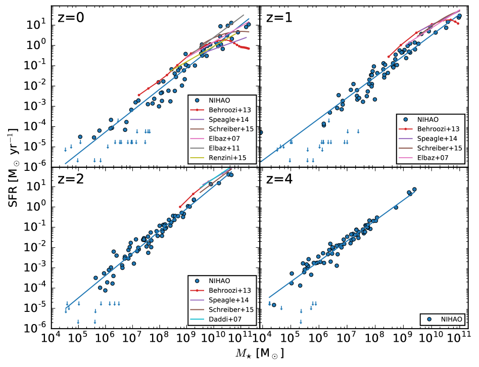
ونقارن نتائجنا أيضاً بعدة رصود. غير أن معظم الرصود لا تتوفر إلا لكتل نجمية كبيرة قدرها ، في حين تغطي محاكيات NIHAO كتلًا نجمية نزولاً إلى . يوفر Behroozi et al. (2013b, a) تجميعاً لرصود متنوعة من منشورات مختلفة. عند تلائم هذه البيانات محاكيات NIHAO جيداً جداً للكتل النجمية دون . وعند الكتل النجمية الأعلى تنخفض القيم المرصودة إلى قيم SFR أدنى مع إخماد تشكّل النجوم في هذه المجرات بفعل تغذية AGN الراجعة. ولا يحدث ذلك لمجرات NIHAO لأنها لا تتضمن ثقوباً سوداء. ولا يكون سوى تطبيع ملاءمتنا للكتل النجمية دون أخفض قليلاً من بيانات Behroozi et al. (2013b, a). كما تتوافق رصود أخرى (Speagle et al., 2014; Schreiber et al., 2015; Elbaz et al., 2007, 2011; Renzini and Peng, 2015; Daddi et al., 2007) مع محاكيات NIHAO.
يبين الشكل 2 معاملات الملاءمة الخطية، أي الميل والتطبيع (SFR عند كتلة نجمية ) والتشتت، مقارنةً بعدة قيم مرصودة: Speagle et al. (2014); Elbaz et al. (2007, 2011); Renzini and Peng (2015); Daddi et al. (2007). لاحظ أن Behroozi et al. (2013b, a) وSchreiber et al. (2015) لا يلائمون علاقة خطية مع بياناتهم، ولذلك نحذفهم هنا.
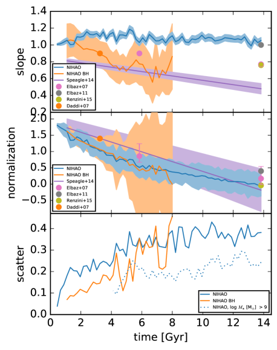
لا يتطور الميل لدينا مع الزمن، وتبلغ قيمه نحو الواحد، ومن ثم فهو أعلى باستمرار من القيم المرصودة التي تتراوح من نحو 0.5 إلى 1. ويمكن تفسير ذلك على النحو الآتي: تغطي معظم الرصود كتلًا نجمية عالية نسبياً قدرها ، حيث تبدأ تغذية AGN الراجعة فعلاً في خفض SFR لهذه المجرات، ولذلك تكون علاقاتها ‘منحنية إلى الأسفل’ مما يعطي ميلاً أصغر. ومن ثم فإن الميل ‘الطبيعي’ ‘من الرتبة الصفرية’ لـ SFMS يقع حول الواحد، ثم يُخفَّض إلى قيم أدنى عند الكتل النجمية العالية بسبب تأثير تغذية AGN الراجعة. ويذكر Abramson et al. (2014) أيضاً ميلاً متناقصاً مع ازدياد الكتلة النجمية، ويعزون ذلك إلى إخماد الكتلة الناجم عن تراكم انتفاخ نجمي.
يبين التطبيع في اللوحة الوسطى من الشكل 2 توافقاً جيداً بين محاكيات NIHAO وعدة قيم مرصودة. وتبين اللوحة السفلى من الشكل 2 تشتت SFMS. تذكر الرصود عادةً تشتتاً يقارب 0.2-0.3 dex، لا يعتمد على الانزياح الأحمر أو الكتلة النجمية. غير أن تشتت مجرات NIHAO يدور حول 0.35 حتى الانزياح الأحمر واحد، ومن ثم فهو أعلى من القيم المرصودة البالغة 0.2-0.3. ويرجع ذلك إلى أن الكتل النجمية الأصغر () في محاكيات NIHAO، وهي عادةً غير مغطاة في معظم الرصود، تعطي تشتتاً أعلى من الكتل النجمية الأكبر، مما يسهم بعد ذلك في التشتت الكلي المبين في الشكل 2. ولإظهار هذا الأثر نعيد حساب التشتت باستعمال المجرات ذات الكتل النجمية فقط، كما هو مبين في اللوحة السفلى من الشكل 2 بخط منقط. ونحذف مجدداً الانزياحات الحمراء التي تضم أقل من 10 مجرات. وبالفعل يصبح التشتت الآن أقل كثيراً، بنحو 0.25 dex، ومن ثم فهو متفق مع القيم المرصودة. وبالإضافة إلى ذلك نعرض في الشكل 3 تشتت SFMS دالةً في الكتلة النجمية لثلاثة انزياحات حمراء مختلفة. يحتوي كل صندوق من الكتلة النجمية على 10 مجرات على الأقل. وبما أن عدد المجرات في كل صندوق منخفض، فإننا نقدر تباين التشتت بطريقة إعادة أخذ العينات جاكنايف. وبالنسبة للكتل النجمية يزداد التشتت مع انخفاض الكتلة النجمية، ويتناقص مع الانزياح الأحمر. ونلاحظ أنه عند الكتل النجمية المنخفضة جداً () قد يزداد التشتت اصطناعياً بسبب عشوائية تشكّل النجوم، إذ لا تشكل بعض المجرات إلا عدداً قليلاً من الجسيمات النجمية.
ولتوضيح كيف تخفض تغذية AGN الراجعة ميل SFMS نأخذ 52 مجرة NIHAO من Blank et al. (2019) حوكيت مع ثقوب سوداء، ونحسب ميل SFMS ومقطعه وتشتته لهذه المجرات. ونستبعد المجرات المخمدة تماماً بانتقاء تلك التي لا يبتعد SFR فيها عن SFMS الملاءم في الشكل 1 بأكثر من ثلاثة أمثال التشتت. كما نستبعد تلك ذات كتلة نجمية والتي لا تغطيها معظم الرصود عادةً. وفضلاً عن ذلك لا نحسب هذه الكميات إلا عندما توجد 10 مجرات على الأقل تحقق هذه المعايير، ولذلك لا توجد بيانات للانزياحات الحمراء المنخفضة حيث تكون معظم المجرات مخمدة. يبين ميل هذه العينة في اللوحة العليا من الشكل 2؛ وهو بالفعل أدنى بكثير من الميل القريب من الواحد لمجرات NIHAO الخالية من الثقوب السوداء، ويلائم جيداً الميل المرصود لدى Speagle et al. (2014). ولا يتغير المقطع تغيراً كبيراً، بل يزداد انحرافه المعياري فقط نحو الانزياحات الحمراء الأصغر. وتنحرف المجرات عن SFMS بسبب تغذية AGN الراجعة، مما يؤدي إلى علاقة أقل إحكاماً. كما أن التشتت يساوي أو يقل عن تشتت مجرات NIHAO الخالية من الثقوب السوداء، مبيناً أن التشتت لا تهيمن عليه آثار تغذية AGN الراجعة.
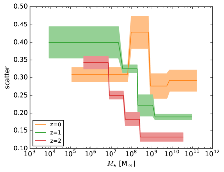
4 أصل تشتت التسلسل الرئيسي لتشكّل النجوم
في هذا القسم ندرس لماذا وكيف تنحرف المجرات عن SFMS، وما الذي يؤثر في تشتته. تعطينا ملاءماتنا لـ SFMS (الشكل 1) متوسط معدل تشكّل النجوم SFRavg بوصفه دالة في الانزياح الأحمر والكتلة النجمية. لذلك نعرّف الانحراف عن متوسط SFR على أنه
| (1) |
ومن ثم فإن المجرة ‘المتوسطة’ ستكون لها قيمة في جميع الأزمنة، أو ستتذبذب قليلاً حول الصفر. غير أن كثيراً من المجرات تنحرف عن هذا السلوك المتوقع كما هو مبين في الشكل 4، الذي يعرض مقابل الزمن لثلاث مجرات.
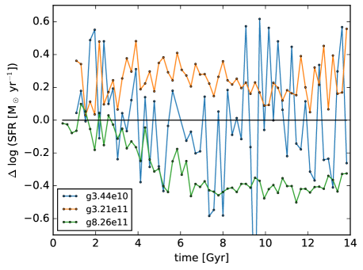
إن المجرة g3.44e1011 1 يشير اسم كل مجرة تقريباً إلى كتلة هالتها عند . (الخط الأزرق) تتذبذب بالفعل حول الصفر طوال عمرها، في حين أن المجرة g3.21e11 (الخط البرتقالي) مفرطة إنتاج مزمنة للنجوم، والمجرة g8.26e11 (الخط الأخضر) ناقصة إنتاج مزمنة. ما الذي يقود السلوك المختلف لهذه المجرات؟ وفقاً لـ Dutton et al. (2010) يعتمد تشتت SFMS على تركيز الهالة، ولذلك ندرس ارتباط بتركيز هالة NFW للمجرات (Navarro et al., 1996). نستخدم تركيز الهالة في محاكيات المادة المظلمة فقط (DMO) المقابلة، إذ يمكن للآثار الباريونية أن تؤدي إلى ملفات كثافة مادة مظلمة غير متوافقة مع NFW (مثلاً، Macciò et al., 2020). ومن بين المجرات 78 المستخدمة في القسم السابق توجد 50 مجرة لها نظير DMO.
يبين المدرج التكراري في الشكل 5 عدد المجرات في كل صندوق من ، مرمزةً لونياً بمتوسط تركيز الهالة في كل صندوق. ونستخدم هنا جميع المجرات 50 عند جميع اللقطات البالغ عددها 64، باستثناء تلك التي لها SFR يساوي صفراً.
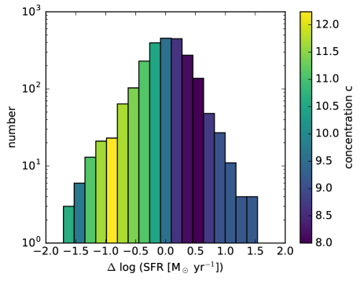
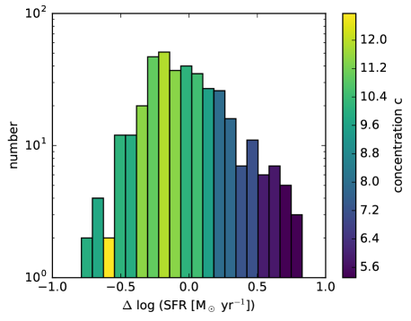
تميل المجرات المفرطة الإنتاج المزمنة، أي المجرات ذات ، إلى امتلاك تراكيز هالة أدنى، في حين تميل المجرات ناقصة الإنتاج المزمنة () إلى امتلاك تراكيز هالة أعلى. يبين الشكل 6 مدرجاً تكرارياً مماثلاً، لكن لست مجرات فقط ذات مجال كتلة هالة قدره 1-2. وهذا يبين أن الأثر المعروض في الشكل 5 لا ينشأ عن تغايرات في كتلة المجرة. ويبين الشكل 7 كذلك تركيز الهالة مقابل لجميع الأزمنة. وتعطي علاقة Spearman قيمة p مقدارها 0.014، مما يبين بوضوح وجود ارتباط بين هاتين الكميتين.
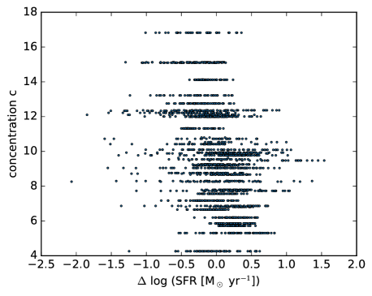
نبحث بعد ذلك لماذا يرتبط تركيز الهالة مع SFR عبر الزمن الكوني. يعتمد التركيز على كثافة المادة الكونية التي تتشكل عندها الهالة، ومن ثم يرتبط التركيز أيضاً بزمن تشكل الهالة. نتبع Wechsler et al. (2002) لحساب زمن تشكل الهالة (أي عامل القياس الذي تتشكل عنده الهالة). ويمكن وصف نمو كتلة الهالة دالةً في عامل القياس على النحو الآتي
| (2) |
حيث إن هي كتلة الهالة ، ويمكن تفسير على أنه عامل القياس الذي تتشكل عنده الهالة. نلائم المعادلة (2) مع تواريخ نمو الهالات في محاكيات DMO. وفي الشكل 8 نعرض تواريخ نمو الهالات وملاءماتها لخمس مجرات، مبينين أن المعادلة (2) توفر وصفاً معقولاً لنمو الهالة.
تعطينا عملية الملاءمة زمن التشكل، أي عامل قياس التشكل لكل مجرة. ثم نعرض الارتباط بين تركيز الهالة وعامل قياس التشكل في الشكل 9، والارتباط بين عامل قياس تشكل الهالة و في الشكل 10. وبقيمة p مقدارها 0.002 يكون هذا الارتباط أقوى من الارتباط بين وتركيز الهالة .
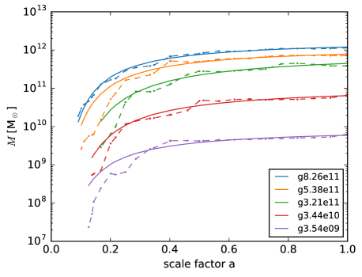
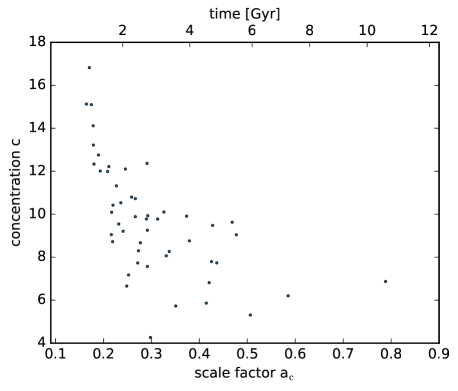
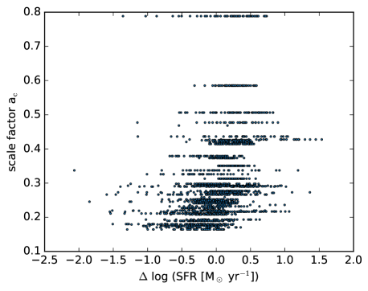
وهكذا فإن الهالات التي تتشكل لاحقاً، أي ذات تركيز هالة أدنى، تمتلك SFR أعلى، بينما الهالات التي تتشكل أبكر، أي ذات تركيز هالة أعلى، تمتلك SFR أدنى من المجرة المتوسطة. وهذا يعني أن كون المجرة تعيش فوق SFMS أو تحته يتحدد عند مولدها، ويمكن تفسير ذلك كما يأتي: تبدو المجرات المفرطة الإنتاج للنجوم ذات SFR أعلى من المتوسط، فهي مزاحة فوق SFMS. غير أن تأويلاً ربما يكون أفضل هو أنها مزاحة إلى اليسار عن SFMS؛ وبذلك فإن لديها ليست SFR أعلى من المتوسط، بل كتلة نجمية أدنى من المتوسط (بالنسبة إلى SFMS عند SFR نفسه).22 2 على الرغم من أن المجرات الواقعة فوق SFMS تنمو أسرع (في الكتلة النجمية) من المجرات الواقعة تحته، فإن مساراتها في مستوى SFR مقابل لا تتقاطع بالضرورة، لأن نسبة SFR إلى ، أي ميلها، تكون دائماً قريبة من الواحد. غير أن مساراتها يمكن أن تتقاطع في مستوى مقابل الزمن. ويتوافق ذلك مع زمن تشكل لاحق، لأن هذه المجرات لم يكن لديها بعد وقت كافٍ لتشكيل عدد كافٍ من النجوم. وبالمثل، فإن المجرات ناقصة الإنتاج للنجوم لا تمتلك SFR أدنى من المتوسط، بل كتلة نجمية أعلى من المتوسط، لأنها شكلت النجوم مدة أطول. وبطبيعة الحال، فإن قياس انحراف المجرات عن SFMS في اتجاه أو في اتجاه SFR هو أمر اعتباطي إلى حد ما. غير أن اختيار يقدم تأويلاً فيزيائياً أرجح من اختيار SFR. وأخيراً، وفقاً لـ Wang and Lilly (2020b, a) قد تسهم التقلبات على مقاييس زمنية < 200 Myr أيضاً في تشتت SFMS؛ ولذلك قد لا تكون الآثار التي نصفها في هذه الورقة السبب الوحيد للتشتت.
وعليه يؤثر زمن تشكل الهالة في تشتت SFMS. وتبعاً لـ Matthee and Schaye (2019) نلائم علاقة خطية مع بوصفها دالة في عامل قياس تشكل الهالة، وبذلك نستطيع حساب SFR ‘مصحح’ أو ‘متبقٍ’ على النحو الآتي
| (3) |
حيث تقاس قيم SFR بوحدة . تعرض اللوحة العليا من الشكل 11 تشتت SFR المصحح هذا مقارنةً بالتشتت الأصلي من الشكل 2. وينخفض التشتت الكلي بنحو 0.05 dex، بما يتفق مع Matthee and Schaye (2019). غير أن الانخفاض في التشتت لا يمتد إلا إلى 5 Gyr. أما في الأزمنة الأسبق، فإن كلاً من SFR المصحح وSFR الأصلي يعطيان تشتتاً متقارباً. ودالةً في الكتلة النجمية (اللوحة السفلى من الشكل 11)، يكون تشتت SFR المصحح أدنى فقط من أجل نزولاً إلى . ولا يحدث أي انخفاض في التشتت من أجل و، بما يتفق مع اللوحة العليا من الشكل 11.
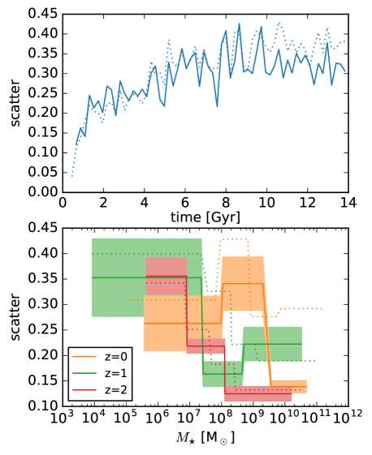
5 الخلاصة
ندرس في هذه الورقة SFMS وأصل تشتته باستعمال مجموعة محاكيات NIHAO للمجرات. في الجزء الأول نقارن SFMS لمجرات NIHAO بعدة رصود. وهي تتفق عموماً بعضها مع بعض، غير أن ميل SFMS يقارب الواحد لجميع الانزياحات الحمراء، ومن ثم فهو أعلى بكثير من القيم المستمدة من الرصود. ويرجع ذلك إلى أن المجرات عند الكتل النجمية العالية () تكون قد تأثرت فعلاً بتغذية AGN الراجعة؛ ولذلك لا تكون مساراتها في مستوى الكتلة النجمية مقابل SFR خطية بل ‘منحنية إلى الأسفل’ مما يؤدي إلى ميول مرصودة أدنى. وتبين مجرات NIHAO الخالية من تغذية AGN الراجعة أن الميل ‘من الرتبة الصفرية’ لـ SFMS، غير المتأثر بتغذية AGN الراجعة، يقارب الواحد. ونؤكد ذلك بإعادة حساب SFMS باستعمال 52 مجرة NIHAO ذات ثقوب سوداء من Blank et al. (2019)، إذ يكون ميلها أصغر من الواحد بكثير ومتفقاً مع الميول المرصودة. تذكر معظم الرصود تشتتاً قدره 0.2-0.3 dex (انظر مثلاً Donnari et al., 2019) مستقلاً عن الكتلة النجمية، لكن محاكيات NIHAO تبين أن التشتت لا يكون بهذا الصغر إلا عند الكتل النجمية الكبيرة. وبما أننا نجد أن الكتل النجمية الصغيرة () لها تشتت أكبر، فإننا نذكر تشتتاً كلياً إجمالياً قدره 0.35 dex. وتعطي إعادة حساب التشتت باستعمال المجرات ذات فقط تشتتاً قدره 0.25، وهو متفق مع القيم المرصودة.
في الجزء الثاني من الورقة ندرس أصل تشتت SFMS. نحسب الانحراف عن SFMS الملاءم لكل مجرة. ولا يتذبذب هذا الانحراف حول الصفر كما هو متوقع، بل يكون أعلى من الصفر أو أدنى منه في معظم التطور، أي إن هذه المجرات إما مفرطة إنتاج مزمنة للنجوم أو ناقصة إنتاج مزمنة لها. نجد أن انحراف SFMS يرتبط بتركيز هالة المادة المظلمة للمجرة عند (انظر أيضاً Dutton et al., 2010)، إذ تمتلك المجرات المفرطة الإنتاج تركيز هالة منخفضاً، والعكس صحيح. ونؤكد أيضاً أن تركيز الهالة مضاد الارتباط بزمن تشكل الهالة (انظر أيضاً Wechsler et al., 2002). ومن ثم فإن انحراف المجرة عن SFMS يرتبط بزمن تشكل الهالة (انظر أيضاً Matthee and Schaye, 2019): فالمجرات المفرطة إنتاج النجوم تتشكل لاحقاً، وناقصة الإنتاج تتشكل أبكر. ما أصل هذا السلوك؟ هل “يتذكر SFR للمجرة SFR الماضي الخاص بها” (Matthee and Schaye, 2019)؟ ليس الأمر كذلك. نقدم التفسير البسيط الآتي لهذه الظاهرة: بدلاً من تفسير هذه المجرات على أنها ذات SFR عالٍ أو منخفض (لأنها تقع فوق SFMS أو تحته)، يمكن تفسيرها على أنها مجرات منخفضة الكتلة النجمية أو عالية الكتلة النجمية (لأنها تقع إلى يسار SFMS أو إلى يمينه). وهذا يعني أن المجرات المتشكلة لاحقاً تمتلك كتلة نجمية أقل من المتوسط، والعكس صحيح. ويسهل فهم ذلك: فالمجرات المتشكلة لاحقاً لديها وقت أقل لتشكيل النجوم، ولذلك تكون كتلتها النجمية أدنى من المتوسط، أما المجرات المتشكلة أبكر فلديها وقت أطول لتشكيل النجوم، ولذلك تكون كتلتها النجمية أعلى من المتوسط. ولذلك فإن طبيعتها (كيف ومتى تتشكل هذه المجرات)، لا طريقة تنشئتها (بيئتها المحلية)، هي التي تحدد رحلة المجرة في مستوى SFR مقابل الكتلة النجمية.
الشكر والتقدير
يعرب المؤلفون عن امتنانهم لـ Gauss Centre for Supercomputing e.V. (www.gauss-centre.eu) على تمويل هذا المشروع بتوفير وقت حوسبة على الحاسوب الفائق GCS Supercomputer SuperMUC في Leibniz Supercomputing Centre (www.lrz.de). أُنجز جزء من هذا البحث على موارد الحوسبة عالية الأداء في New York University Abu Dhabi. استخدمنا حزمة البرمجيات pynbody Pontzen et al. (2013) في تحليلاتنا.
بيان إتاحة البيانات
ستُتاح البيانات التي يستند إليها هذا المقال للباحثين عند تقديم طلب معقول إلى المؤلف المراسل.
References
- The Mass-independence of Specific Star Formation Rates in Galactic Disks. ApJ 785 (2), pp. L36. External Links: Document, 1402.7076 Cited by: §3.
- The Average Star Formation Histories of Galaxies in Dark Matter Halos from z = 0-8. ApJ 770, pp. 57. External Links: 1207.6105, Document Cited by: Figure 1, §3, §3.
- On the Lack of Evolution in Galaxy Star Formation Efficiency. ApJ 762 (2), pp. L31. External Links: Document, 1209.3013 Cited by: Figure 1, §3, §3.
- NIHAO - XXII. Introducing black hole formation, accretion, and feedback into the NIHAO simulation suite. MNRAS 487 (4), pp. 5476–5489. External Links: Document, 1906.06955 Cited by: §2, §2, §2, §3, §5.
- The physical properties of star-forming galaxies in the low-redshift Universe. MNRAS 351 (4), pp. 1151–1179. External Links: Document, astro-ph/0311060 Cited by: §1.
- Multiwavelength Study of Massive Galaxies at z~2. I. Star Formation and Galaxy Growth. ApJ 670 (1), pp. 156–172. External Links: Document, 0705.2831 Cited by: §1, Figure 1, Figure 2, §3, §3.
- The star formation activity of IllustrisTNG galaxies: main sequence, UVJ diagram, quenched fractions, and systematics. MNRAS 485 (4), pp. 4817–4840. External Links: Document, 1812.07584 Cited by: §1, §5.
- NIHAO XII: galactic uniformity in a CDM universe. MNRAS 467, pp. 4937–4950. External Links: 1610.06375, Document Cited by: §2.
- On the origin of the galaxy star-formation-rate sequence: evolution and scatter. MNRAS 405 (3), pp. 1690–1710. External Links: Document, 0912.2169 Cited by: §1, §4, §5.
- The reversal of the star formation-density relation in the distant universe. A&A 468 (1), pp. 33–48. External Links: Document, astro-ph/0703653 Cited by: §1, Figure 1, Figure 2, §3, §3.
- GOODS-Herschel: an infrared main sequence for star-forming galaxies. A&A 533, pp. A119. External Links: Document, 1105.2537 Cited by: §1, Figure 1, Figure 2, §3, §3.
- Radiative Transfer in a Clumpy Universe. IV. New Synthesis Models of the Cosmic UV/X-Ray Background. ApJ 746, pp. 125. External Links: 1105.2039, Document Cited by: §2.
- The MaGICC volume: reproducing statistical properties of high-redshift galaxies. MNRAS 437 (4), pp. 3529–3539. External Links: Document, 1302.2618 Cited by: §1.
- A superbubble feedback model for galaxy simulations. MNRAS 442, pp. 3013–3025. External Links: 1405.2625, Document Cited by: §2.
- NIHAO X: reconciling the local galaxy velocity function with cold dark matter via mock H I observations. MNRAS 463, pp. L69–L73. External Links: Document Cited by: §2.
- NIHAO - XXIII. Dark matter density shaped by black hole feedback. MNRAS 495 (1), pp. L46–L50. External Links: Document, 2004.03817 Cited by: §4.
- The origin of scatter in the star formation rate-stellar mass relation. MNRAS 484 (1), pp. 915–932. External Links: Document, 1805.05956 Cited by: §1, §1, §4, §5.
- The Structure of Cold Dark Matter Halos. ApJ 462, pp. 563. External Links: Document, astro-ph/9508025 Cited by: §4.
- Star Formation in AEGIS Field Galaxies since z=1.1: The Dominance of Gradually Declining Star Formation, and the Main Sequence of Star-forming Galaxies. ApJ 660 (1), pp. L43–L46. External Links: Document, astro-ph/0701924 Cited by: §1.
- Planck 2013 results. XVI. Cosmological parameters. A&A 571, pp. A16. External Links: 1303.5076, Document Cited by: §2.
- pynbody: Astrophysics Simulation Analysis for Python. Note: Astrophysics Source Code Library, ascl:1305.002 Cited by: الشكر والتقدير.
- An Objective Definition for the Main Sequence of Star-forming Galaxies. ApJ 801 (2), pp. L29. External Links: Document, 1502.01027 Cited by: §1, Figure 1, Figure 2, §3, §3.
- NIHAO - XIV. Reproducing the observed diversity of dwarf galaxy rotation curve shapes in CDM. MNRAS 473, pp. 4392–4403. External Links: 1706.04202, Document Cited by: §2.
- The Herschel view of the dominant mode of galaxy growth from z = 4 to the present day. A&A 575, pp. A74. External Links: Document, 1409.5433 Cited by: §1, Figure 1, §3, §3.
- The enrichment of the intergalactic medium with adiabatic feedback - I. Metal cooling and metal diffusion. MNRAS 407, pp. 1581–1596. External Links: 0910.5956, Document Cited by: §2.
- The star formation main sequence and stellar mass assembly of galaxies in the Illustris simulation. MNRAS 447 (4), pp. 3548–3563. External Links: Document, 1409.0009 Cited by: §1.
- A Highly Consistent Framework for the Evolution of the Star-Forming “Main Sequence” from z ~0-6. ApJS 214 (2), pp. 15. External Links: Document, 1405.2041 Cited by: §1, Figure 1, Figure 2, §3, §3, §3.
- Making Galaxies In a Cosmological Context: the need for early stellar feedback. MNRAS 428, pp. 129–140. External Links: 1208.0002, Document Cited by: §2.
- Star formation and feedback in smoothed particle hydrodynamic simulations - I. Isolated galaxies. MNRAS 373, pp. 1074–1090. External Links: astro-ph/0602350, Document Cited by: §2.
- The evolving star formation rate: M⋆ relation and sSFR since z ? 5 from the VUDS spectroscopic survey. A&A 581, pp. A54. External Links: Document, 1411.5687 Cited by: §1.
- A model for cosmological simulations of galaxy formation physics: multi-epoch validation. MNRAS 438 (3), pp. 1985–2004. External Links: Document, 1305.4931 Cited by: §1.
- Gasoline2: a modern smoothed particle hydrodynamics code. MNRAS 471, pp. 2357–2369. External Links: Document Cited by: §2.
- The Variability of Star Formation Rate in Galaxies. II. Power Spectrum Distribution on the Main Sequence. ApJ 895 (1), pp. 25. External Links: Document, 2003.02146 Cited by: §4.
- The Variability of the Star Formation Rate in Galaxies. I. Star Formation Histories Traced by EW(H) and EW(HA). ApJ 892 (2), pp. 87. External Links: Document, 1912.06523 Cited by: §4.
- NIHAO project - I. Reproducing the inefficiency of galaxy formation across cosmic time with a large sample of cosmological hydrodynamical simulations. MNRAS 454, pp. 83–94. External Links: 1503.04818, Document Cited by: §2, §2, §2, §2.
- Concentrations of Dark Halos from Their Assembly Histories. ApJ 568, pp. 52–70. External Links: astro-ph/0108151, Document Cited by: §4, §5.